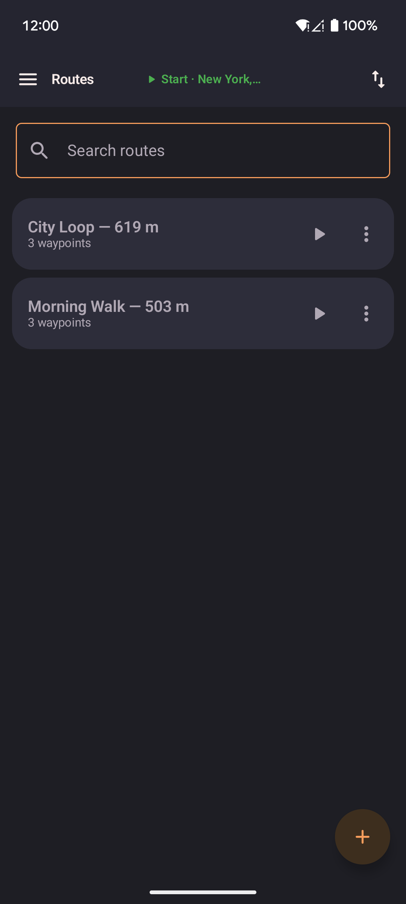
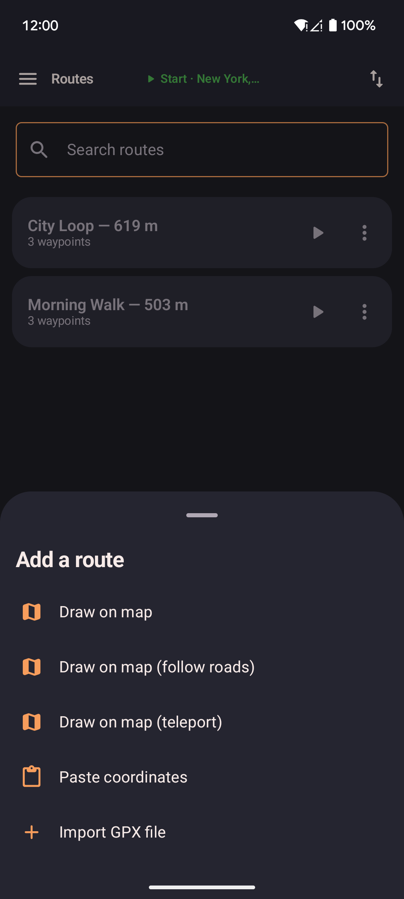
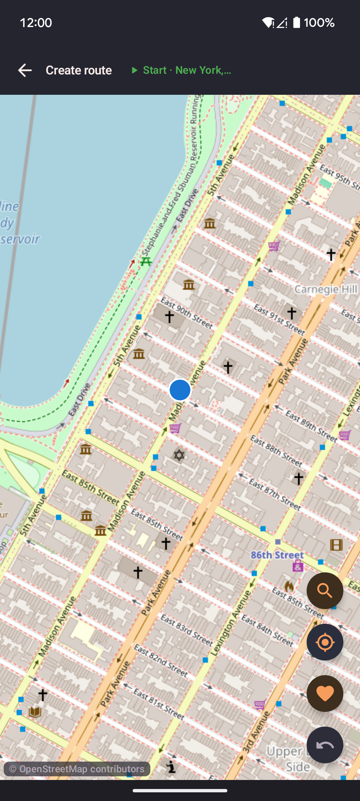
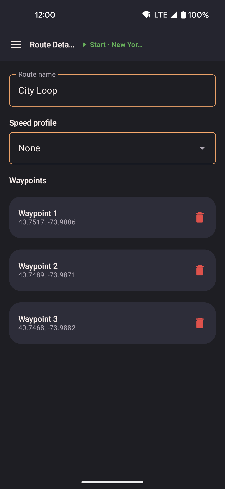

Routes
A route is a list of stops that you replay at your chosen speed. Routes stay on your device. See the privacy policy. Move routes to another phone with Backup & Transfer.
The Routes list

- Tap a saved route to start it. You walk to the first stop, then playback follows the path.
- Search by name with the search box. The map's routes sheet has the same box.
- Sort routes A–Z, Z–A, newest, or oldest. The widget's route list uses the same order.
- While a route plays, a count such as 3 of 12 shows your current stop.
- The three-dot menu lets you edit, share, export, or delete a route. Share copies every stop as a line of latitude and longitude.
How to add a route
Tap the add button at the bottom right of the Routes screen. Pick one of these methods.

- Draw on map: place stops by hand.
- Draw on map (follow roads): the route follows real streets.
- Draw on map (teleport): you jump between stops.
- Paste coordinates: build a route from a list of points.
- Import GPX file: import an existing route.
You can also open a GPX file from another app. Files with thousands of points are skipped. A message shows how many.
Route types
| Type | What it does |
|---|---|
| Straight | You move between stops in straight lines. Works offline. Imported routes use this type. |
| Guided (road-following) | Each stretch follows real roads. Walk and Run use walking roads. Bike uses cycling roads. The app loads roads from an external service. If that service is unreachable, the stretch uses a straight line. After the first load, replays work offline. |
| Teleport | You jump between stops. Each stop has a wait time. Follow roads has no effect on this type. |
Replay options
Tap play on a saved route to open the options sheet. Cancel and Start are at the bottom.
Options before you start
| Option | What it does |
|---|---|
| Loop | On when the sheet opens. Playback restarts at the first stop after the last. It runs until you stop it. |
| Planting | Walks a circle around each stop instead of through its center. Turns Loop on. The saved route does not change. See Paste coordinates. |
| Reverse | Plays the stops from last to first. Works with Loop. |
| Return to start | After the last stop, you walk back to the first. Avoids a sudden jump at the end. |
| Follow roads | Movement between stops follows real roads. Not available for teleport routes. |
| Teleport between waypoints | Jumps from stop to stop. Playback waits at each stop before the next jump. The default wait is 8 seconds. You can set it up to 10 minutes in the box beside the checkbox. |
Teleport options hide when Hide teleport features is on in Settings. That hides Teleport and Teleport between waypoints, and it hides teleport from the walk to the first stop.
Start and Teleport
- Start walks to the first stop (the last stop if Reverse is on) and starts playback.
- Teleport jumps to the first stop without starting playback. Tap Start when you are ready. With Planting on, it jumps to the stop itself.
To jump to the first stop before Start, tap Teleport first, or turn on Teleport between waypoints.
While a route runs
- Pause stops movement and keeps your progress. Moving the joystick also pauses the route, so you can steer. Tap Resume to continue from the saved progress. With Teleport between waypoints on, Resume jumps to the next stop.
- Previous stop and Next stop jump to the stop before or after the current one. They appear in the widget and on the routes screen. Turn them on in Settings.
- Pause or stop the route before you start roaming.
Paste coordinates
Paste a list of coordinates to make a saved route. The app skips lines it does not recognize, so you can keep headings and notes. Check Swap lat / lon order if the first number is the longitude. The paste box on the map accepts the same text and can start a route without saving it.
| Mode | What it does |
|---|---|
| As-is | Joins the points with straight lines. Works offline. |
| Walkable path | Follows footpaths. Needs internet the first time, then works offline. |
| Planting mode | Walks a circle around each point. Needs one point. The other modes need two or more. |
| Optimize proximity | Reorders the points so each stop is near the previous one. |
One paste makes one route. A route started without saving appears as Temp Route from Paste. The next start replaces it. Routes you saved under your own name stay.
Route creator
Tap the map to place stops. A line joins them.

- Search for a place by name with the search button. The search uses an external service.
- Use the heart button to pick a favorite. Use the target button to center the map on your position.
- Undo the last stop with the undo button.
- Before you save, choose straight, road-following, or teleport.
- On a teleport route, each stop asks how many seconds to stay. The default is 5. The minimum is 1.
- Record saves your phone's real movement as a route while you walk.
Route detail
Rename a route, reorder or remove stops, or change how it moves between stops.

- Drag stops to reorder them.
- Tap a stop to highlight it on the map.
- Choose the speed for this route, or choose "None" to use the current speed. Hidden for teleport routes.
- On a teleport route, edit the wait time for each stop, or set one wait time for all stops.
- On a teleport route, "Randomize order" jumps between stops in a random order. A looping route picks a new order each time it restarts.
- If you change a route from straight to road-following, the app loads the roads the next time you start it.
- Delete the route from the action bar. This cannot be undone.
Import formats
| Format | Notes |
|---|---|
| GPX | A common file for GPS tracks and routes. Recorded tracks and planned routes both work. Both become straight-line routes. Altitude comes from the GPS realism settings. |
| GPS Joystick | Export a GPX file from GPS Joystick, then import it from Settings. Named places become favorites. Each route becomes straight lines. |
| YAMLA | The export file from the YAMLA app. Favorites and speeds are imported. Routes become straight lines. |
| locationjoystick backup | The app's own backup. It keeps everything, including route type and stops. Choose Add to merge it with your data, or Replace to overwrite your data. |
Hot routes
In Settings, turn on Show hot routes to add ready-made routes for popular event locations. They include large walking areas, parks, and landmarks. This is off by default.
- Turning it off removes only the routes this feature added. Your own routes stay.
- The list updates online. Routes that are removed disappear while this is on.